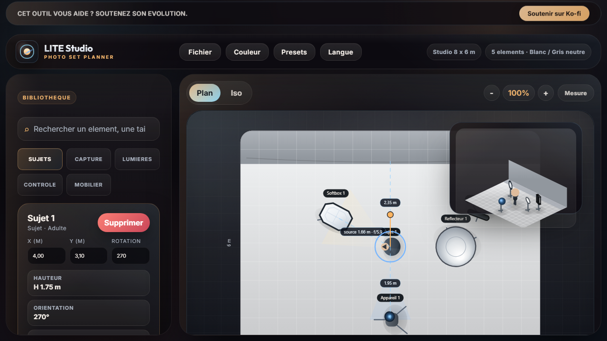

Schema d'eclairage photo
Comment preparer un schema d'eclairage portrait simple, propre et facile a executer.
Un bon schema d'eclairage portrait ne se limite pas a une belle idee de lumiere. Il doit aussi permettre a l'equipe de comprendre ou placer la source cle, le fill, la camera, le sujet et les accessoires de controle, puis de verifier les bonnes distances.
Source clePlacez une grande source a 45 degres pour un rendu doux et polyvalent.
Mesures autoVerifiez source sujet, sujet fond et camera sujet sans calcul manuel.
Zoom mobile et desktopControlez le plateau en detail a la molette ou au pinch.
PDF et preset persoExportez le plan ou sauvegardez votre variante apres ajustement.
